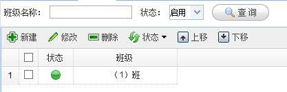
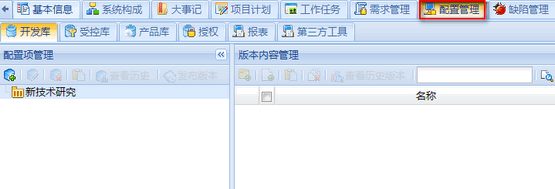
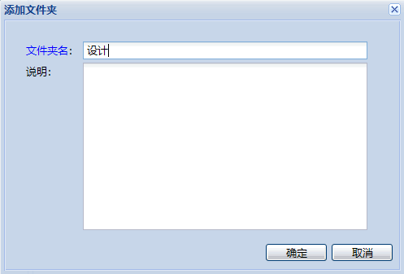

Step1. 登录oKit前台，点击进入项目管理模块，并进入配置管理标签页


添加配置项
填写配置项名称，点击确定
创建成功
Step3. 选择刚创建的配置项，点击添加文件夹按钮，在配置项下创建文件夹
添加文件夹

填写文件夹名称，点击确定
创建成功
Step4. 选择刚创建的文件夹，点击添加文件按钮，在文件夹下添加文件
添加文件
点击按钮
添加成功
配置项授权
Step6. 配置管理基于SVN服务器，可以使用任何支持HTTP协议的SVN客户端进行提交和更新，oKit提供了一个自带的配置管理客户端，可以进入个人中心的软件下载页面进行下载，下面简单介绍一下配置管理客户端如何使用。
安装好配置管理客户端后，点击复制SVN地址按钮，获取需要检出的SVN目录地址
获取文件夹的SVN地址
创建一个用于检出的文件夹，比如Project，右键点击，选择KR检出
点击KR检出
在版本库URL中粘贴刚才复制的SVN地址，点击确定
粘贴地址
填写oKit系统中的用户名和密码，注意应先给此用户授权，点击确定
填写用户名和密码
检出完成后，Project文件夹的图标会变为 ，表示已更新到最新
，表示已更新到最新
检出完成
查看更多关于配置管理的资料，请点击